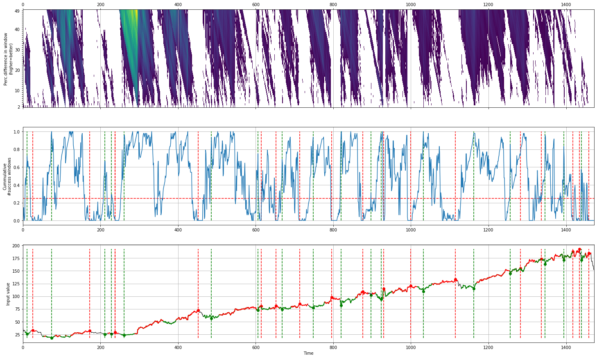
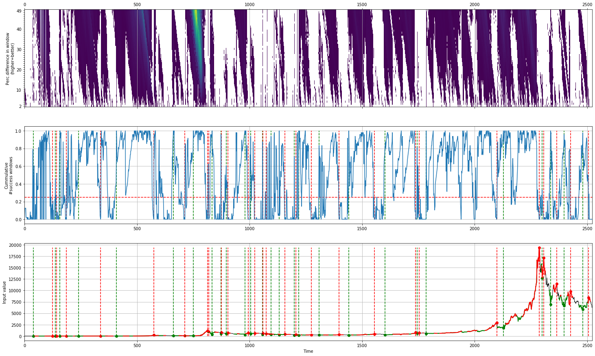
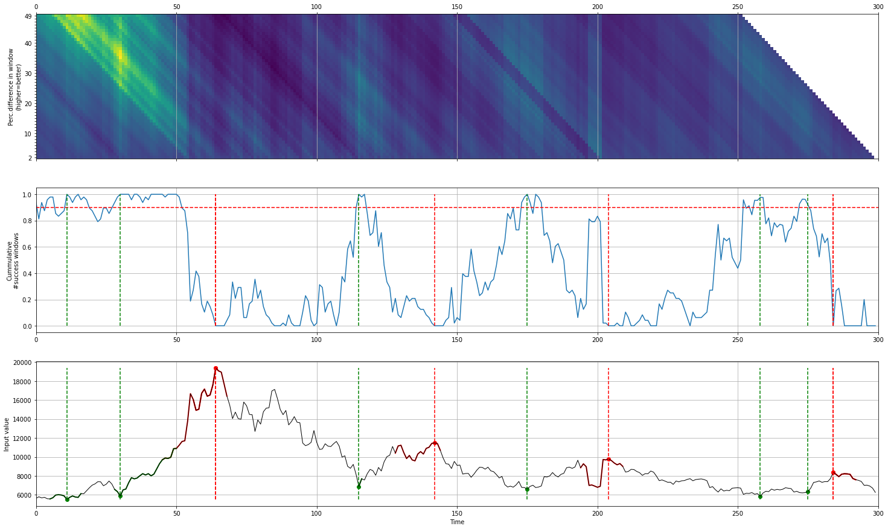
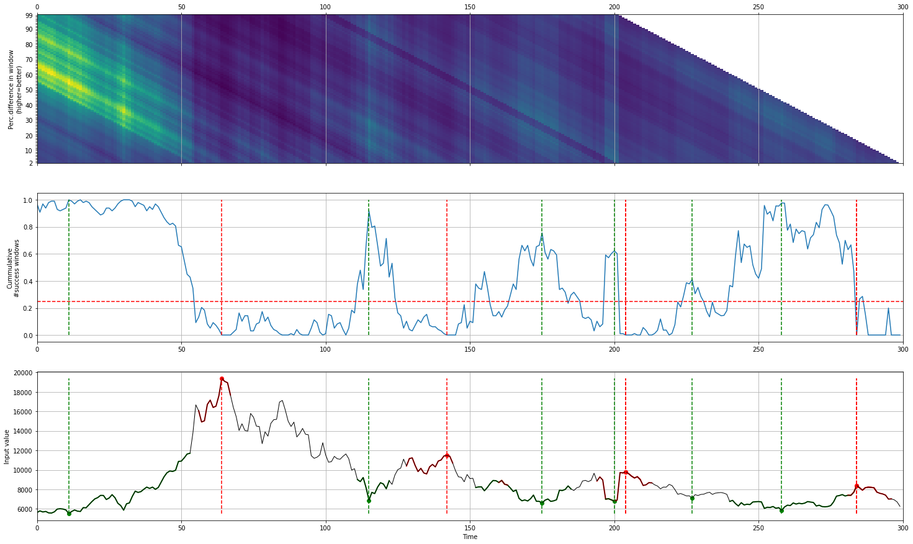
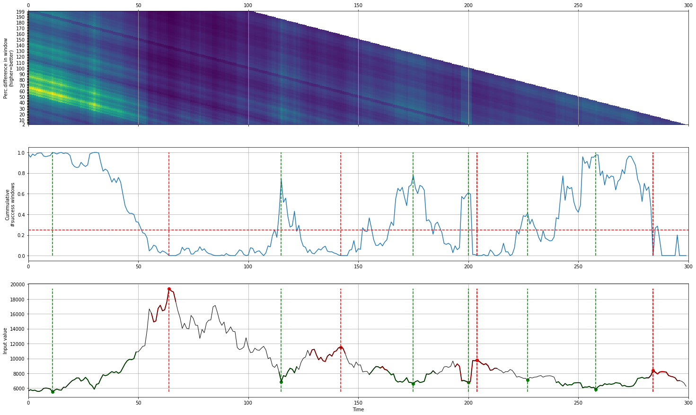
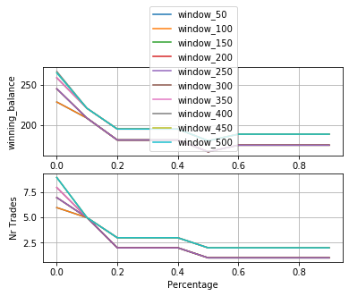

Detect valleys and peaks in stockmarket data
Facebook
In the following example we load the 2016 elections data of the USA for various candidates. We will check whether the votes are fraudulent based on benfords distribution.
# Import library
from caerus import caerus
# Initialize
cs = caerus()
# Import example dataset
X = cs.download_example(name='facebook')
# Fit
cs.fit(X)
# Plot
cs.plot()
# Results are stored in the object
print(cs.results.keys())
# ['X', 'simmat', 'loc_start', 'loc_stop', 'loc_start_best', 'loc_stop_best', 'agg', 'df']
# Results are stored in DataFrame
print(cs.results['df'])
# X labx peak valley
# 0 38.2318 0 False False
# 1 34.0300 0 False False
# 2 31.0000 0 False False
# 3 32.0000 0 False False
# 4 33.0300 0 False False
# ... ... ... ...
# 1467 169.3900 0 False False
# 1468 164.8900 0 False False
# 1469 159.3900 0 False False
# 1470 160.0600 0 False False
# 1471 152.1900 0 False False
[1472 rows x 4 columns]
 |
Bitcoin
For demontration purposes, we will detect the peaks and valley of the Bitcoin. It can be seen that the method easily pickups the peaks and valleys at the early years, and the last years.
# Import library
from caerus import caerus
# Initialize
cs = caerus()
# Import example dataset
X = cs.download_example(name='bitcoin')
# Fit
cs.fit(X)
# cs.fit(X[-300:])
# Plot
cs.plot()
 |
Threshold effect
The threshold will change the strength of peaks and valleys that detected (middle plot). The higher the threshold cut-off, the better the peaks and valleys.
# Set the threshold higher
# Top figure
cs = caerus(threshold=0.025)
# Bottom figure
cs = caerus(threshold=0.9)
# Search last 300 datapoints
cs.fit(X[-300:])
# Plot
cs.plot()
 |
Window effect
The window size is used to determine the change in percentages. It is computed by the distance of start location + window.
A smaller window size is able to pickup better local minima, and larger window sizes will stress more on the global minma.
See below a demontration where the window size is increased. The figures clearly shows (top figures) that the windows are larger as the detected regions become more horizontal.
# Change the window size
cs = caerus(window=50)
cs = caerus(window=100)
cs = caerus(window=200)
# Search last 300 datapoints
cs.fit(X[-300:])
# Plot
cs.plot()
 |
 |
Gridsearch
With the gridsearch it is possible to automatically search across various windows (window) and percentages (minperc).
# Initialize
cs = caerus()
# Gridsearch parameters
cs.gridsearch(X)
# Change search window and minperc
# cs.gridsearch(X, window=np.arange(50,550,100), minperc=np.arange(1,20,5))
# Plot
cs.plot()
 |